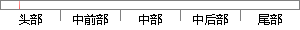

从1985年Symbolics公司注册的第一个.
片段位置图

相似结果|
相似片段 1：，域名从1985年Symbolics公司注册了第一个．tom域名到现在也不过经过了二十多年发展的时间，域名相对于商标还处于发展的初期，加之为了推进互联网的发展，域名注册实行的是开放式的近乎无审查的政策
相似片段 2：草案修正了DNS技术规范，并废除了之前的第882和883号草案。在此之后对因特网标准草案的修改基本上没有涉及到DNS技术规范部分的改动酬。1985年Symbolics公司注册了第一个com域名，当时
相似片段 3：CNNIC负责注册和管理。1985年，Symbolics公司注册了第一个．com域名。当时域名注册刚刚兴起，申请者寥寥无几。1993年Internet上出现WWW协议，域名开始吃香。1993年
相似片段 4：的计算机制造商Symbolics注册了Symbolics．tom这一域名。该域名被称之为世界上第一个以．tom结尾的域名。后来，美国的网络解决方案公司
相似片段 5：(Buchannan)快速模式匹配的Rete算法(Forgy)1979人工智能开始商业化，Inference公司成立(1985年发行ART专家系统工具)1980 Symbolics和LMI推出LISP机SMP数学
|
※ 片段修改建议 ※
近似词参考：